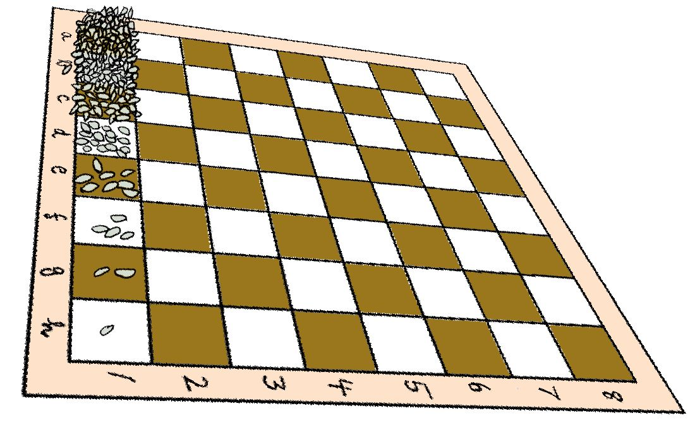

Chapitre 1 Semaine 1 : Calcul littéral (1)
1.1 Exemple d’introduction
D’après une légende arabe, le jeu d’échecs a été inventé par un brahmane chargé de l’instruction d’un jeune roi.
Enthousiasmé par ce nouveau jeu, le roi offrit à l’inventeur la récompense qu’il voudrait. Pour donner une nouvelle leçon à son élève, le brahmane demanda un grain de blé sur la première case de l’échiquier, deux sur la deuxième, quatre sur la troisième, huit sur la quatrième, et ainsi de suite toujours en doublant le nombre de grains de riz, jusqu’à la 64ème case et que le tout soit additionné et lui fût remis.

D’apparence modeste, la demande fut accordée. Malheureusement, toutes les réserves de la terre ne purent y satisfaire.
En réalité, le roi aurait dû donner \(18446744073709551615\) grains de riz. Ceci correspond à environ \(1500\) ans de production mondiale actuelle.
Il est possible de noter le nombre de grains de riz de la manière suivante:
| Numéro case | Nombre de grains de riz | |
|---|---|---|
| \(1\) | \(1\) | |
| \(2\) | \(2\) | |
| \(3\) | \(2\cdot 2\) | |
| \(4\) | \((2\cdot 2)\cdot 2=2^3=8\) | |
| \(5\) | \((2\cdot 2\cdot 2)\cdot 2=2^4=16\) | |
| \(\cdots\) | \(\cdots\) | |
| \(64\) | \(2^{63}=9223372036854775808\) |
1.2 Bases théoriques
1.2.1 Puissances
On appelle \(\textbf{n}\) ième puissance de \(a\) un produit de \({\color{red}n}\) facteurs égaux à \(a\)
\[ a^n = \underbrace{a\cdot a\cdot \ldots \cdot a}_{n~\text{facteurs égaux à}~a}\]
1.2.2 Signe d’une puissance
On utilise la règle des signes bien connue
- La puissance d’un nombre positif est toujours positive.
- La puissance d’un nombre négatif est
- positive si l’exposant est pair
- négative si l’exposant est impair
1.2.3 Produit de puissances de même base
\[a^2\cdot a^3=(a\cdot a)\cdot(a\cdot a\cdot a)=a\cdot a\cdot a\cdot a\cdot a\cdot = a^5 = a^{2+3}\]
On a donc la règle générale suivante pour deux exposants entiers \(n\) et \(m\)
Pour multiplier des puissances de même base, on conserve la base et on additionne les exposants.
\[a^n\cdot a^m = a^{n+m}\]
1.2.3.1 Exemples
\[\begin{align*} 3^2\cdot 3^3 \cdot 3^4 & = 3^{2+3+4}= 3^9\\ x^5\cdot x^2 \cdot x^4 \cdot x^1 & = x^{5+2+4+1}= x^{12}\\ \end{align*}\]
1.2.3.2 Cas particuliers
Que valent, avec \(n\in\mathbb{N}\), \[\boldsymbol{a^0\qquad a^1\qquad a^{-n}}\qquad ?\]
Et bien, on les traites comme les autres, mais en veillant à y appliquer les règles vues ci-dessus. c’est-à-dire
\(\begin{array}{rrcl} \boldsymbol{a^0}\longrightarrow & & &{\color{green}a^3}\cdot a^0 = a^{3+0} = a^3\\ &&&\\ \text{or:}& a^3 & = &{\color{green}a^3}\cdot 1\\ &&&\\ \text{donc on définit:}&{\color{red}a^0} & {\color{red}=}& {\color{red}1}\quad\text{ avec } a\neq 0\\ \end{array}\)
\(\begin{array}{rrcl} \boldsymbol{a^1}\longrightarrow & & & {\color{green}a^2}\cdot a^1 = a^{2+1} = a^3\\ &&&\\ \text{or:}& a^3 & = & {\color{green}a^2}\cdot a\\ &&&\\ \text{donc on définit:}&{\color{red}a^1} & {\color{red}=} & {\color{red}a}\\ \end{array}\)
\(\begin{array}{rrcl} \boldsymbol{a^{-n}}\longrightarrow & & & a^n \cdot a^{-n} = a^{n+(-n)} = a^0 = 1\\ & & &\\ \text{ or: } & 1 & = & a^n \cdot \dfrac{1}{a^n}\\ & & &\\ \text{donc, avec $a\ne0$, on définit : }\quad & a^{-n} & = & \dfrac{1}{a^n}\\ \end{array}\)
De plus \(\boldsymbol{a^{-n}}\) est l’inverse de \(\boldsymbol{a^{-n}}\). Et on impose que \(a\neq 0\), car \(0\) n’a pas d’inverse.
1.2.4 Puissance d’une puissance
1.2.4.1 Exemple
\[(a^2)^3 = a^2\cdot a^2\cdot a^2 = a^{2+2+2}=a^6=a^{2\cdot 3}\] Le cas général donne
\[(a^n)^m = \underbrace{a^n\cdot a^n\ldots \cdot a^n}_{{\color{red}m}~\text{facteurs}} = a^{\overbrace{n+n+\ldots+n}^{{\color{red}m}~\text{termes}}}=a^{n\cdot m}\] Par cet exemple on voit que
Pour élever une puissance à une puissance, on garde la base et on multiplie les exposants:
\[(a^n)^m = a^{n\cdot m}= a^{mn}\]
1.2.5 Puissance d’un produit
1.2.5.1 Exemple
\[(a\cdot b)^3 = (a\cdot b)\cdot (a\cdot b)\cdot (a\cdot b) =(a\cdot a\cdot a)\cdot (b\cdot b\cdot b)= a^3\cdot b^3= a^3b^3\] On a ainsi le cas général:
\[\begin{align*} (a\cdot b)^n & = &\underbrace{(a\cdot b)\cdot \ldots \cdot (a\cdot b)}_{{\color{red}n}~\text{facteurs}}\\ & = & \underbrace{(a\cdot a\ldots\cdot a)}_{{\color{red}n}~\text{facteurs}}\cdot \underbrace{(b\cdot b\ldots\cdot b)}_{{\color{red}n}~\text{facteurs}}\\ & = & a^n\cdot b^n= a^nb^n \end{align*}\]
On obtient ainsi la règle
Pour élever un produit à une puissance, on élève chaque facteur à cette puissance:
\[(ab)^n = a^nb^n\]
1.2.6 Notation scientifique
La distance moyenne séparant Pluton du Soleil est de \(5{,}9\) milliards de kilomètres, soit \(5 900\) milliards de mètres, autrement dit \(5 900 000 000 000\) mètres.
La longueur d’onde des rayons X est de l’ordre de \(0{,}000 000 01\) centimètres.
La lecture des deux longueurs indiquées ci-dessus n’est pas aisée; c’est pourquoi on les note à l’aide d’une puissance de \(10\).
Par exemple, au lieu d’écrire \(5 900 000 000 000\text{ m}\) on écrira \(5{,}9\cdot 10^{12}\text{ m}\) et de même \[0{,}000 000 01\text{ cm} = 1\cdot 10^{-8}\text{ cm} = 10^{-8}\text{ cm}\]
On parle alors d’écriture scientifique. On peut alors poser la règle d’écriture suivante pour tous les nombres réels:
En notation scientifique, les nombres s’écrivent sous la forme:
\[a\cdot 10^n\qquad 1\leq |a| < 10\qquad \text{et}\quad n\in \mathbb{Z}\]
1.2.6.1 Exemples
\[\begin{align*} 525 000 000 = 5{,}25\cdot 10^8\\ \\ 0{,}000 000 000 000 2=2\cdot 10^{-13}\\ \\ 1{,}425\cdot 10^{12}= 1 425 000 000 000\\ \\ -1{,}2\cdot 10^{-8}=-0{,}000 000 012\\ \end{align*}\]
Remarquez que les calculatrices de poche peuvent afficher les résultats en notation scientifique.
1.2.7 Extraction de racines
Si l’on sait que l’air d’un carré mesure \(625\text{ m}^2\), on peut connaître la longueur du côté.
En effet, l’aire d’un carré est égale au carré du côté. Il faut donc trouver une longueur qui, élevée au carré, donne \(625\text{ m}^2\).
On écrit: \(\sqrt{625\text{ m}^2}=25\text{ m}\)
De même, il est possible de trouver l’arrête d’un cube dont le volume vaut \(216\text{ m}^3\).
Le volume d’un cube étatn égal au cube de son arête, il s’agit de trouver une dimension qui, élevée au cube, donne \(216\text{ m}^3\).
On écrit: \(\sqrt[3]{216\text{ m}^3}=6\text{ m}\)
Dans les deux cas, on a extrait la racine d’un nombre.
1.2.8 Racine n ième
La racine \({\color{red}n}\) ième d’un nombre positif \(a\), notée \(\sqrt[{\color{red}n}]{a}\), est le nombre positif qui, élevé à la puissance \({\color{red}n}\), égale \(a\).
1.2.8.1 Exemples
\[\begin{align*} \sqrt{64} = 8\text{, car }8^2 = 64\\ \\ \sqrt[3]{a^6} = a^2\text{, car }(a^2)^3 = a^6\text{, pour }a\in \mathbb{Q}\\ \end{align*}\]
On obtien donc, par définition, que
\[(\sqrt[n]{a})^n = a\]
1.2.8.2 Remarques importantes
- Bien que \(8^2=64\) et que \((-8)^2=64\), par convention on écrit \(\sqrt{64}=8\) et \(-\sqrt{64}=-8\)
- Lorsque l’indice de la racine est impair, il est possible d’extraire la racine d’un nombre négatif. En effet \(\sqrt[3]{-8}=-2\), car \((-2)^3=-8\), par contre \[\sqrt{-4}\not\in\mathbb{Q}\] car \((+2)^2=4\) et \((-2)^2 = 4\), aucun nombre au carré, dans \(\mathbb{R}\), ne donne un nombre négatif.
- En général, l’indice \(2\) des racines “carrées” ne s’écrit pas, tous les autres doivent s’écire.
1.2.9 Racine d’un produit
Par exemple \(\sqrt{9\cdot 16}=\sqrt{144}=12\), mais ceci est égale à \(\sqrt{9}\cdot \sqrt{16}=3\cdot 4=12\), on a donc égalité des deux expressions: \[\sqrt{9\cdot 16}=\sqrt{9}\cdot\sqrt{16}\]
Le cas général donne
\[\sqrt{a\cdot b}=\sqrt{a}\cdot\sqrt{b}\] En effet, \[(\sqrt{a}\cdot\sqrt{b})^2=(\sqrt{a})^2\cdot(\sqrt{b})^2= a\cdot b\]
La racine d’un produit est égale au produit des racines:
\[\sqrt{a\cdot b} = \sqrt{a}\cdot\sqrt{b}\]
1.2.9.1 Remarque
Cette règle de calcul ne fonctionne que pour le produit de racines, pour la somme, il n’y a pas égalité: \[\sqrt{a+b}\neq\sqrt{a}+\sqrt{b}\] En effet, \(\sqrt{64+36}=\sqrt{100}= 10\) mais \(\sqrt{64}+\sqrt{36}=8+6=14\) et il n’y a pas égalité entre \(\sqrt{64+36}\) et \(\sqrt{64}+\sqrt{36}\).
1.3 Exercices résolus (exemples)
Solution 1
Il est facile de se souvenir que \(a= a^1\) et que le produit de deux puissances de même base est l’écriture de la base et de la somme des puissances des autres puissances, autrement dit la somme des exposants. Ainsi on aura \(a\cdot a= a^1\cdot a^1=a^{1+1}=a^2\). La solution de notre exercice est donc
\[a\cdot a\cdot a\cdot a = a^{1+ 1+ 1+ 1}= a^4\]
Solution 2
Il faut y aller par étapes. Tout d’abord la division (\(\div\)) est remplacée ici, et en général en algèbre, par l’écriture fractionnaire. Ainsi l’opérateur \(\div\) sera remplacé par la barre de fraction \(\dfrac{\phantom{AA}}{\phantom{AA}}\).
Puis, se souvenir aussi qu’une puissance négative, veut dire l’inverse de la puissance sans le signe : \(b^{-2}=\dfrac{1}{b^2}\).
La solution s’escrit donc ainsi:
\[(b^5\div b^{-2})=\dfrac{b^5}{b^{-2}}=\dfrac{b^5}{\dfrac{1}{b^2}}=b^5\cdot b^2=b^{5+2}=b^7\] NB: Un nombre divisé par une fraction est ce même nombre multiplié par l’inverse de la fraction.
1.4 Exercices et problèmes
1.4.1 Exercices (I)
Exercice 1
Ecris sous forme de puissances:
- \(\quad x\cdot x\cdot x\cdot x\)
- \(\quad a\cdot a\cdot a\)
- \(\quad m\cdot n\cdot n\cdot m\cdot m\)
- \(\quad 2\cdot 3\cdot x\cdot y\cdot x\cdot 2\cdot x\)
- \(\quad (xy)\cdot (xz)\cdot (xyz)\cdot y\)
- \(\quad (-2)\cdot a\cdot(-2)\cdot(a\cdot a)\cdot(-2)\cdot a\)
Exercie 2
Effectue les produits
- \(\quad x^2\cdot x^3\cdot x\cdot x^4\)
- \(\quad z^2\cdot z^3\cdot z^5\cdot z\)
- \(\quad a^1\cdot a^7\cdot a^5\cdot a^2\)
- \(\quad x^2\cdot a^3\cdot x^4\cdot a\cdot y^2\)
- \(\quad 2\cdot y^5\cdot a^2\cdot 3\cdot y\cdot b\)
Exercice 3
Ecris différemment
- \(\quad x^{-2}\)
- \(\quad n^0\)
- \(\quad y^1\)
- \(\quad a^0\cdot y^{-2}\)
- \(\quad \dfrac{1}{x}\)
- \(\quad x^{-2}\cdot x\)
Exercice 4
Effectue les opérations suivantes
- \(\quad x\cdot x^{-1}\cdot x^0\cdot x\)
- \(\quad (-2)^2\cdot (-2)\cdot(-2)^{-1}\)
- \(\quad a^2\cdot(a^3\div a)\)
- \(\quad (x^{-2}\cdot x^3)\div x\)
- \(\quad (b^5\div b^7)\cdot b^{-3}\)
- \(\quad x^2\div(x^3\cdot x)\)
- \(\quad (a^5\div a^6)\cdot a^2\)
- \(\quad (y^5\cdot y^{-5})\div y\)
- \(\quad (x^2\cdot x^{-3})\cdot(x^{-3}\div x^2)\)
- \(\quad (z\cdot z^{-2})\div (z^{-3}\div z)\)
1.4.2 Exercices (II)
Exercice 1
Effectue
- \(\quad (2x^2)^3\cdot (x^2\div x^4)\)
- \(\quad (a^2y^3\cdot a^{-2}y)^4\)
- \(\quad (4a^nb)^2\)
- \(\quad x^a\cdot x\cdot x^b\)
- \(\quad a^{2n}\cdot a^n\)
- \(\quad (a^2)^n\cdot (a^n)^2\)
- \(\quad x^3\cdot x^{-n}\cdot x^2\cdot x^n\)
- \(\quad (y^3)^2\cdot(y\cdot y^{-2})^2\)
- \(\quad (xy^2)^3\div(x^2y)^2\)
- \(\quad (a+1)^4\div (a+1)^2\)
Exercice 2
Calcule la valeur des expressions suivantes
- \(\quad (a^2\cdot a^{-3}\cdot a^4)^2\cdot a^{-4}\quad\) si \(\quad a=5\)
- \(\quad (x^2\div x^3)\cdot(x^{-2}\div x^{-3})\quad\) si \(\quad x=1{,}2\)
- \(\quad (2a^2)^3\qquad\) si \(\quad a=-1\)
- \(\quad (-x^2)^2\quad\) si \(\quad x=10\)
Exercice 3
Ecris en notation scientifique
- \(\quad 300\)
- \(\quad 0{,}001\)
- \(\quad 120\)
- \(\quad 3'840\)
- \(\quad 0{,}000'32\)
- \(\quad 0{,}000'001'25\)
- \(\quad 780'000'000\)
- \(\quad 5'010'000'000\)
- \(\quad 0{,}000'000'000'2\)
- \(\quad 0{,}000'000'000'010'13\)
- \(\quad 762'500'000'000\)
- \(\quad 0{,}000'000'000'300'1\)
Exercice 4
Ecris les nombres suivants sans utiliser la notation scientifique
- \(\quad 3\cdot 10^5\)
- \(\quad 1{,}2\cdot 10^7\)
- \(\quad 10^{-4}\)
- \(\quad 7\cdot 10^{-8}\)
- \(\quad 1{,}32\cdot 10^9\)
- \(\quad 1{,}5\cdot 10^{-5}\)
- \(\quad 3{,}42\cdot 10^{-8}\)
- \(\quad 1{,}08\cdot 10^6\)
- \(\quad 2{,}7\cdot 10^{-4}\)
- \(\quad -5\cdot 10^{-9}\)
Exercice 5
Effectue les produits et note la réponse en écriture scientifique
- \(\quad (2\cdot 10^5)\cdot(3\cdot 10^4)\)
- \(\quad (5\cdot 10^7)\cdot(7\cdot 10^6)\)
- \(\quad (8\cdot 10^{-3})\cdot(1{,}5\cdot 10^{-2})\)
- \(\quad (2{,}1\cdot 10^3)\cdot(6\cdot 10^2)\)
- \(\quad (5\cdot 10^{-8})\cdot (2\cdot 10^{-4})\)
- \(\quad (3\cdot 10^{-8})\cdot(0{,}5\cdot 10^7)\)
- \(\quad (1{,}2\cdot 10^6)\cdot(3\cdot 10^{-6})\)
- \(\quad (4\cdot 10^12)\div(2\cdot 10^{10})\)
- \(\quad (3{,}2\cdot 10)\cdot(1{,}5\cdot 10^{-6})\)
- \(\quad (-2\cdot 10^{-3})\cdot(1{,}03\cdot 10^{-4})\)
1.4.3 Problèmes (III)
Problème 1
Encadre par deux entiers consécutifs. Par exemple s’il faut encadrer \(\sqrt{19}\) alors on écrira \(4\leq \sqrt{19} < 5\)
- \(\quad \sqrt{50}\)
- \(\quad \sqrt{27}\)
- \(\quad \sqrt{220}\)
- \(\quad \sqrt{169}\)
- \(\quad \sqrt[3]{36}\)
- \(\quad \sqrt[3]{100}\)
- \(\quad \sqrt[3]{-64}\)
- \(\quad \sqrt[4]{4}\)
Problème 2
Calculer la valeur des expressions suivantes, si pas possible, expliquer pourquoi
- \(\quad \sqrt{4\cdot 9}\)
- \(\quad \sqrt{4}\cdot\sqrt{9}\)
- \(\quad \sqrt{9}\cdot\sqrt{16}\)
- \(\quad \sqrt{9\cdot 16}\)
- \(\quad \sqrt{4\cdot 25}\)
- \(\quad \sqrt{25}\cdot\sqrt{4}\)
- \(\quad \sqrt[3]{8}\cdot\sqrt[3]{125}\)
- \(\quad \sqrt[3]{8\cdot 125}\)
- \(\quad \sqrt{144+25}\)
- \(\quad \sqrt{144}+\sqrt{25}\)
Problème 3
Calcule en utilisant les règles sur les racines. Par exemple:
\[\sqrt{108}\cdot\sqrt{48}=\sqrt{36\cdot 3}\cdot\sqrt{16\cdot 3}=\sqrt{36}\cdot\sqrt{3}\cdot\sqrt{3}\cdot\sqrt{16}=6\cdot 3\cdot 4=72\]
- \(\quad \sqrt{8}\cdot\sqrt{50}\)
- \(\quad \sqrt{18}\cdot\sqrt{72}\)
- \(\quad \sqrt{12}\cdot\sqrt{75}\)
- \(\quad \sqrt{125}\cdot\sqrt{45}\)
- \(\quad \sqrt{3}\cdot\sqrt{48}\)
- \(\quad \sqrt{15}\cdot\sqrt{12}\cdot\sqrt{80}\)
- \(\quad \sqrt[3]{4}\cdot\sqrt[3]{16}\)
- \(\quad \sqrt[3]{25}\cdot\sqrt[3]{40}\)
Problème 4
Sachant que \(a,b,x,y > 0\) calculer les expressions suivantes
- \(\quad \sqrt{x}\cdot\sqrt{x^5}\)
- \(\quad \sqrt{2a^3}\cdot\sqrt{8a^5}\)
- \(\quad \sqrt[3]{a^2}\cdot\sqrt[3]{a^4}\)
- \(\quad \sqrt[4]{x^5}\cdot\sqrt[4]{x^3}\)
- \(\quad \sqrt{10}\cdot\sqrt{a}\cdot\sqrt{5a^3b}\cdot\sqrt{3ab^2}\cdot\sqrt{6a^5b}\)
- \(\quad \sqrt{a}\cdot\sqrt{a^4}\cdot\sqrt{a^7}\)
- \(\quad \sqrt{3x^3}\cdot\sqrt{x^3}\cdot\sqrt{3}\)
- \(\quad \sqrt[3]{2xy^2}\cdot\sqrt[3]{8xy^3}\cdot\sqrt[3]{4x^4y}\)